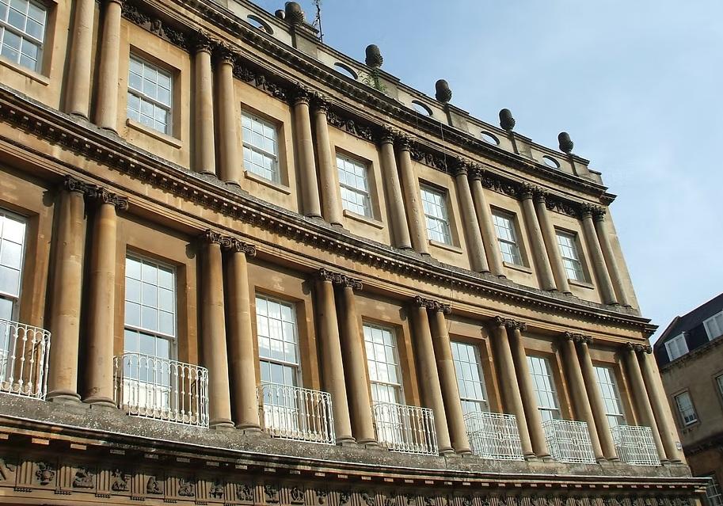
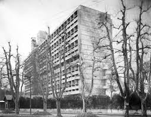
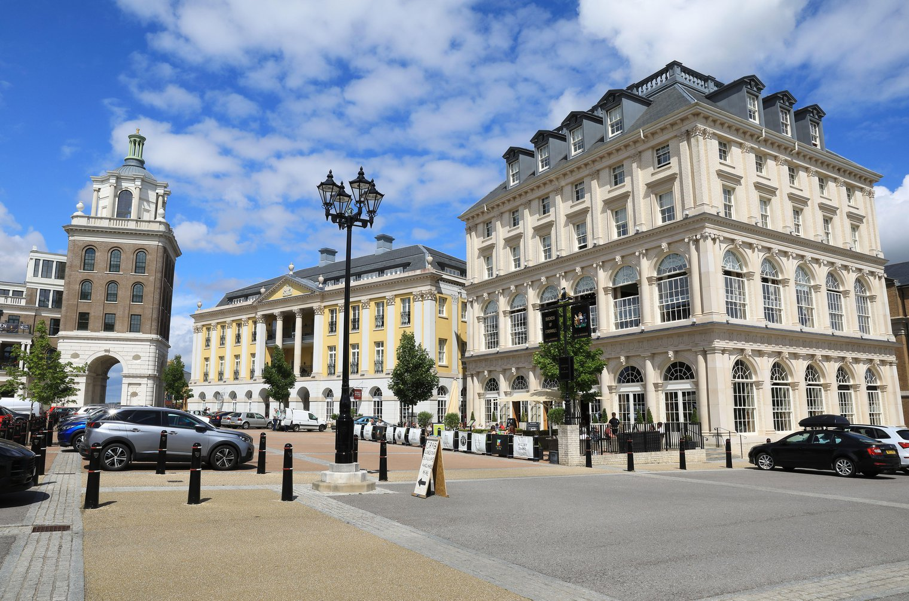

Britain Unbuilt

Why would 'A Short History of British Architecture, From Stonehenge to the Shard', by Simon Jenkins, (b. 1943) veteran English writer and journalist, ride through his beloved British centuries on a skittish American pony? The short answer is because Jane Jacobs, (1916-2006), born in Scranton, Pennsylvania, published a book on urbanism in 1961. Her 'The Death and Life of Great American Cities' changed the town planning game forever.
Jenkins is a true journalist in that his interest in the past is academic while what happens in his lifetime touches his viscera. He has written books that are hardly more than surveys, "Short Histories" of Europe, of England and of London. His 'Short History of British Architecture' covers a much too long period from 3000 BC to 2020 AD. There's no doubt that buildings are serious presences for Jenkins. But until he reaches the 1920s what he tells us can be found in a good encyclopaedia or middling reference book. His slant is to note controversies over style through the centuries as if builders chose them as a cravat to wear for a stage of history, not so much as a product determined by the forces of the time. Let's pass over his rush through these millennia but for a couple of remarks that might interest expats in Italy.
"When in the seventh century the Synod of Whitby decided Britain would worship in the Roman rite, all British churches were ordered to be designed 'after the Roman fashion'. It was to be the fashion of British ecclesiastical architecture for some five hundred years."
and
"Eighteen-century Britons—those who could afford it—took architecture sufficiently seriously to send their young to Italy, often for years, to study the legacy of classicism. For a brief period, the British establishment became seriously conversant with architecture. The outcome was reflected in the appearance of Georgian Bath, Brighton, Cheltenham, Edinburgh and the London square."

Jenkins drops his impartiality and reveals his bias as he approaches the years after the Second World War. He sees modernism that "captured the commanding heights of British national and local government patronage in the 1940s and 50s" as bringing "swathes of Britain's cities to the brink of destruction." For him, the thinking behind this assault came from Charles-Édouard Jeanneret, the Swiss-French architect known as Le Corbusier, (1887-1965). Now this is the same conclusion that Jacobs reached long before him, after she had carefully sifted the evidence and, moreover, felt the destruction on her skin.

Le Corbusier's urban planning aimed to do away with the street. "Il fast tuer la rue-corridor." He called sidewalk cafés, "a fungus that eats the pavements of Paris." He recognised the overwhelming importance of the motor car. His remedy was to separate other human activity from traffic, to situate each on different levels. But it turned out that his solution only worked well for the automobile that just kept rolling along, leaving people still far from the kind of serene Seventh Heaven that the author—Corb for fans—of 'La Ville radieuse' promised them.
If Jenkins' combat against Le Corbusier was bookish, Jacobs' was guerrilla warfare—or literally street fighting, the pavement against the automobile. She was a resident of Greenwich Village who took on the behemoth, Robert Moses, (1888-1981), who had more political muscle than almost anyone in the history of New York City. His biographer Robert Caro called him, "A guy who has never been elected to anything, who has enough power to turn the entire state around."
Moses, the czar of super-road building, would have sneered at Le Corbusier as a dilettante in the crusade to unmuzzle the motor car as every city's the top dog. He found Jacobs' masterly analysis "intemperate and also libellous ... junk". Who was this "militant dame", this "housewife without academic credentials?" A post-Second World War consensus in town planning held sway that subordinated the residents of a city to the reign of the internal combustion engine. The bulldozers of Moses had already destroyed Pennsylvania Station, an architectural gem. His planned Lower Manhattan Expressway would have hacked through Greenwich Village and what is now SoHo, chopping up China Town and Little Italy. That project and his plan to build a Mid-Manhattan Expressway were thwarted in large part by protests like Jacobs' and by her book. It showed that so-called "slum clearance" and "urban renewal" were euphemisms for the tearing apart of communities whose complexity produced a reasonable amount of human happiness. The street, far from being a drawback, added to a neighbourhood's dynamism, humanity, and, for that matter, was a spectacle for its inhabitants to savour.
Moses' power faded. He never did learn how to drive an automobile. Jacobs left the USA in 1968 in protest against the Vietnam War and became an expat in Canada where her militancy continued till her death thirty-eight years later.
With Le Corbusier and Jane Jacobs, a third person sheds light on Jenkins' view of the architecture of his lifetime, Charles III, in his earlier comic persona as Prince Charles. In an unusual move for a member of the royal family, he entered the architectural debate ini 1984 when he addressed the Royal Institute of British Architects. They were assembled at Hampton Court to celebrate the 150th anniversary of their founding. According to conservative hangers-on, Charles' sneak attack "eviscerated modern architecture". In fact, he claimed a royal seat on the bandwagon that Jane Jacobs had set moving when she called out ruthless "inner-city renewal" for the breakup of integrated communities. Like Jacobs, Charles came to favour restoration instead of demolition and building anew.
His speech is remembered for describing the competition-winning design for an extension to the National Gallery as a, 'monstrous carbuncle on the face of a much-loved and elegant friend'. (Never mind the Third Millennial comment that Charles ended up marrying a carbuncle.) That the winning design was scrapped in a hurry showed the weight that royal disapproval could and would have. Charles conceived a special dislike for the architect Richard Rogers, a declared anti-monarchist, that would become a veritable vendetta. Rogers, the architect of Centre Georges Pompidou, the Lloyd's building, the Millennium Dome and the European Court of Human Rights, was hit with a royal blackball. His plans were nixed for Paternoster Square by Saint Paul's, the Royal Opera House and the Chelsea Barracks. Rogers explained, "I was basically told: 'the prince does not like you'."
Rogers understood the wobble in Charles' thinking. The prince treated the style of a building as something one chose from a warehouse of historical items. Charles, whose fate depended entirely on history, never got beyond that dusty collection of has-beens. "Charles knows little about architecture. He sees this debate as a battle of the styles, which is against the run of history because architecture evolves and moves, mirroring society."

Poundbury, Charles' Potemkin effort that he promoted in Dorset has been derided as a "feudal Disneyland, all show and no depth." A housing development dressed up as a village, it's a market of styles filled with NeoGeorgian, Victorian, and the odd fairy castle. There is an inevitable "Queen Mother Square". The idea that this fantasy of 4,100 souls could serve as a model for the UK's 68 million people in the Third Millennium is no more than a nostalgia-fuelled utopian delusion.
Charles invariably stumbled when he left history for the present. He couldn't discriminate between a mediocre tower block and the splendid Mies van der Rohe's design for a building in Mansion House. It was sober and downright beautiful and the prince's veto meant the UK was deprived of a Mies' work equal to his other landmarks set around the world.
Le Corbusier, Jane Jacobs, and Prince Charles are the figures that lead to Simon Jenkins philistine anti-modernism that burst like a suppurating boil in his final chapters covering 1940 to 2020. He sees starchitects, rockstar-profile architects, as the culprits. This is a serious mistake. Zaha Hadid, Norman Foster, Frank Gehry, Renzo Piano and their like merely stepped in to fill a planning void. If, for instance, relevant officialdom would have insisted that tower blocks be grouped together in an appropriate place, they would not have played havoc with London's skyline. Moreover, these famous architects were limited to designing museums, housing for civic institutions, and flashy tourist attractions by the same officials who did not commission them to do public housing.
Jenkins, making a scapegoat of Le Corbusier fails to note an essential distinction. Le Corbusier did fail as a town planner, being over confident he could keep the motor car in its place. As an architect he did, however, face up he task of incorporating the century's new materials into the building process. This included massive walls of cement that gave Jenkins bad dreams. He apparently believes that the architecture he decries called Brutalism takes its name from brute or brutal. In fact, it comes from the French 'béton brut', which simply means 'raw concrete'. In any case, as an artist, Le Corbusier was a brilliant innovative designer, hardly the first creative figure to be wrong when going beyond his art and telling homo sapiens how to live his life.
It's well to reflect that even Jane Jacob's defending communities of human scale got something wrong. Her policy of not destroying them with urban renewal but refurbishing them often resulted in gentrification that destroyed them in another way. Refurbishing took money and the original inhabitants didn't have enough. A main purpose of Charles' Poundbury was to restrict the motor car and develop public transport but, by all reports, the pseudo-village remains car-based. Neither Le Corbusier's suppression of the street nor Jacobs' reinvigorating it can be said to have worked as we watch high-street and neighbourhood life and commerce decline.
A sober look at the use of the motor car in a city of 100,000 like Lecce tells us that metal bodies have defeated those of flesh. And wait a minute! Driverless cars are on the way. Richard Rogers said architecture can't avoid "the run of history". Simon Jenkins offers us grievances but no credible suggestions of how we should change the pace of our run. He avoids royal arrogance but like Charles reduces the debate to a dilettantish battle of styles.